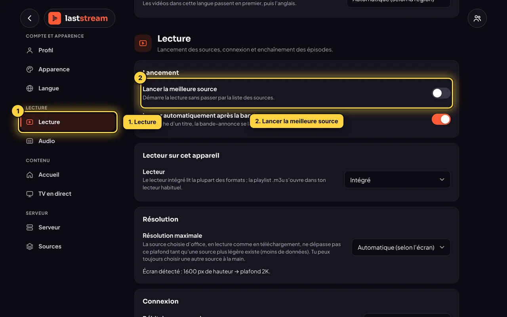
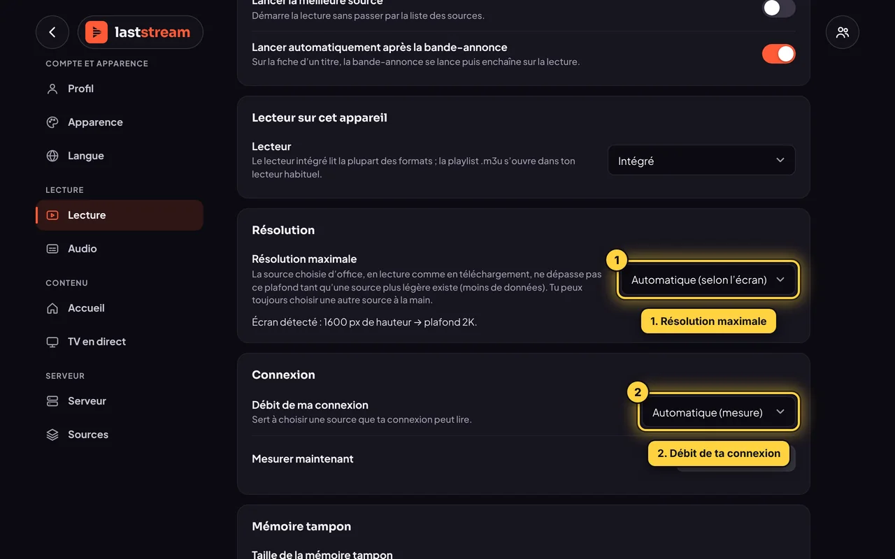
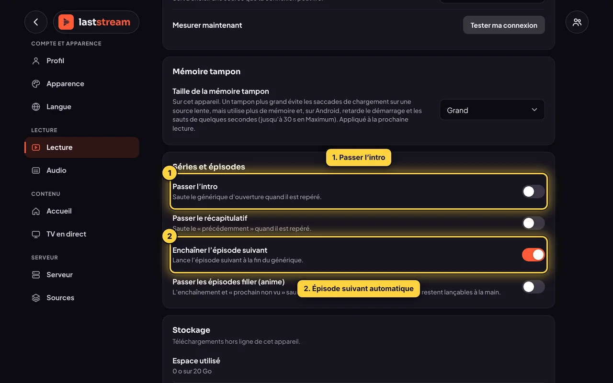
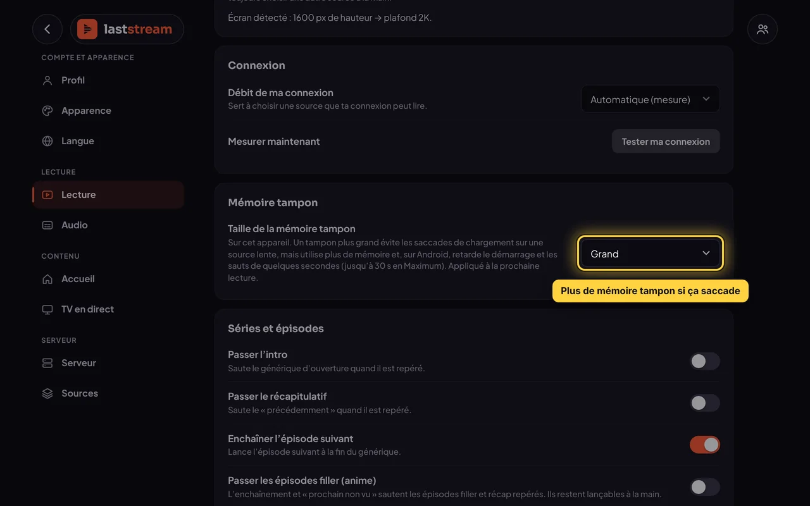

Étapes
Sur chaque capture, le cadre jaune montre où toucher ou cliquer ; les numéros donnent l’ordre.
-
Ouvre les « Réglages », catégorie « Lecture » (1). « Lancer la meilleure source » (2) démarre la lecture sans passer par la liste des sources.

-
« Résolution maximale » (1) plafonne la qualité choisie d’office, pour économiser des données. « Débit de ma connexion » (2) écarte les sources trop lourdes pour ta connexion : laisse « Automatique (mesure) » ou choisis un débit.

-
Pour les séries : « Passer l’intro » (1) saute le générique d’ouverture quand il est repéré, « Enchaîner l’épisode suivant » (2) lance la suite à la fin du générique. « Passer le récapitulatif » saute le « précédemment ».

-
Si la lecture saccade sur une source lente, augmente la « Taille de la mémoire tampon » : « Grand » ou « Maximum ».
